«Пишут в мессенджер вечером — отвечаем утром. Половина клиентов остывает».
Что делаю Лендинг с формой и ИИ-бот, который отвечает по базе знаний 24/7 и передаёт сложный вопрос менеджеру.
Разработка · маркетинг-аналитика · международный бизнес
Меня зовут Марина. Делаю веб-разработку на заказ: лендинги, ИИ-ботов, трекеры, дашборды, аналитику и SEO-тексты под ключевые запросы. Работаю быстро, без раздутого бюджета и с передачей кода. 20+ лет в бизнесе — маркетинг, аналитика и развитие международных проектов, поэтому сначала разбираюсь в задаче, а потом выбираю стек.
Зачем это бизнесу
Три ситуации, из-за которых малый бизнес теряет заявки, время и деньги. Каждая — повод сделать маленький цифровой продукт, а не «сайт для галочки».
«Пишут в мессенджер вечером — отвечаем утром. Половина клиентов остывает».
Что делаю Лендинг с формой и ИИ-бот, который отвечает по базе знаний 24/7 и передаёт сложный вопрос менеджеру.
«Смету считаем в Excel два часа, заявки — в блокноте, отчёты — вручную».
Что делаю Калькулятор по вашему прайсу, трекер заявок и автоматизацию выгрузок — без новых подписок.
«Непонятно, сколько заявок, где узкое место и сколько на самом деле стоит объект».
Что делаю Дашборд: сводка, фильтры, план/факт и отклонения на одном экране.
Услуги
Цены — ориентир «от»; инвестиционные продукты (бизнес-план, финмодель, презентация) — по договорённости. Точная смета после короткого брифа: разбиваю задачу на блоки, считаю часы и фиксирую объём. Веб-разработка на заказ включает не только код: можно заказать сайт под ключ вместе с SEO-текстами и метатегами.
Продающая структура, адаптив, формы заявок, быстрая загрузка. HTML/CSS/JS или Next.js — под задачу.
Telegram или VK: отвечает по вашим материалам, помнит контекст, передаёт сложное менеджеру, не падает при сбое API.
Заявки, задачи, роли, SLA-таймеры, отчёты. Канбан и спринты вместо таблиц и переписок.
Смета по прайсу из Excel, разбор и выгрузка xlsx/docx/csv, обезличивание данных, скрипты под рутину.
Сводные таблицы, фильтры, графики, сравнение предложений и отчёты для планёрки.
Статьи для блога, посадочные страницы и карточки товаров: структура под интент, ключи в тексте без переспама, редактура и метатеги.
Структура уровня UNIDO/ЕБРР: резюме, рынок, юнит-экономика, сценарии, риски, финтаблицы и раздел источников с проверяемыми ссылками. Word + PDF.
Формулы, а не картинки: P&L, ДДС, баланс, сценарный анализ, юнит-экономика, cap table и IRR/MOIC. Меняете допущения — пересчитывается вся модель.
Pitch deck 16:9 на 15–17 слайдов: проблема, решение, рынок, финансы и предложение инвестору — с графиками, оформлением и согласованностью цифр.
Опишите задачу в двух предложениях — вернусь с вариантом решения, сроком и ценой. Без обязательств.
НаписатьСпециализация
Два направления, в которых я понимаю процесс, данные и ответственность. Для медицинских задач собрала отдельный сайт — с медицинской палитрой и кейсами.
Сайты практик, ИИ-боты записи, дашборды закупок, обезличивание данных и отчётность. С учётом 152-ФЗ и клинических процессов.
Свожу данные из таблиц и выгрузок в один экран: где переплата, где узкое место и что происходит с деньгами.
Собираю инвест-пакет под ключ: бизнес-план, финансовую модель и презентацию из единого блока допущений — цифры в Word, Excel и на слайдах никогда не расходятся. Отдельно проверяю статистику: в конце документа — раздел «Источники данных» с проверяемыми ссылками. Цена — по договорённости. Демо-пакет (все цифры вымышлены) открыт для просмотра.
Портфолио
Не скриншоты «для красоты»: у каждого проекта есть живое демо, открытый код или страница с PDF. Нажмите «Подробнее», чтобы увидеть задачу, решение и результат.
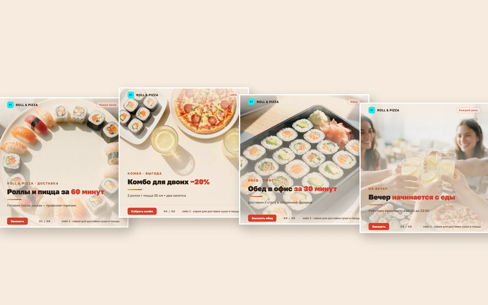
ВизуалыFL.ru · реальный заказ · серия 1080×1080
Серия для сервиса доставки роллов и пиццы по вакансии с FL.ru: обложка, продукт, комбо, обед, процесс, доставка и финальный CTA. Одна сетка, одна тёплая палитра, текст наложен отдельно от генерации — читается как неделя контента, а не 8 разовых картинок.
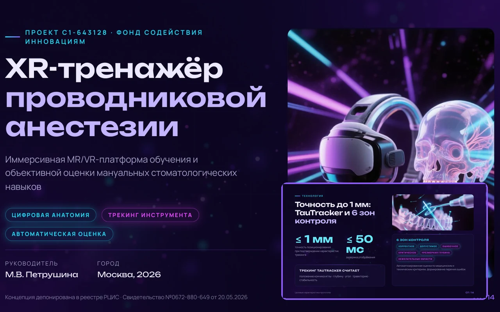
ПрезентацияФСИ · медтех-грант · 14 слайдов
Редизайн грантовой презентации проекта C1-643128: структура «боль → решение → доказательства → вывод», 14 слайдов в тёмном неоне и 16 иллюстраций из нейросети по авторским промптам.
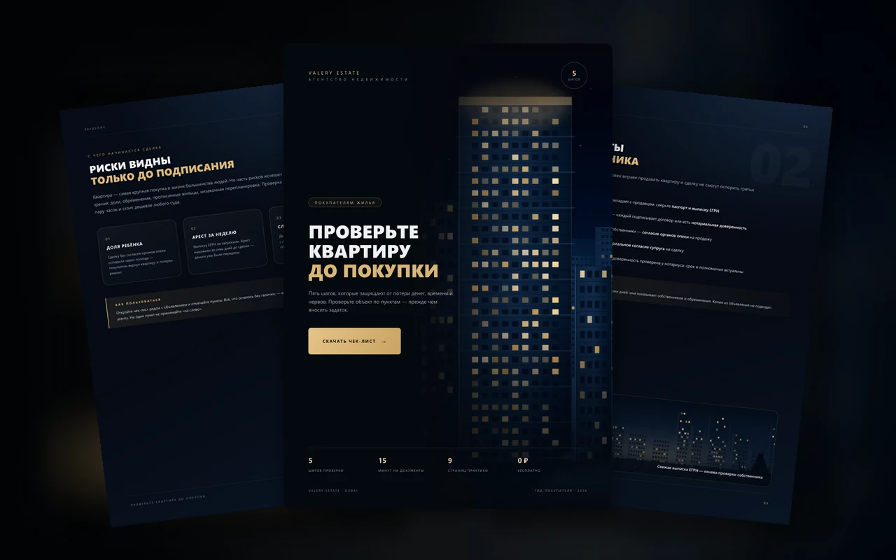
Лид-магнитFL.ru · недвижимость · 9 страниц
Премиальный чек-лист для агентства недвижимости: 6 блоков проверки, 5 шагов и CTA на консультацию.
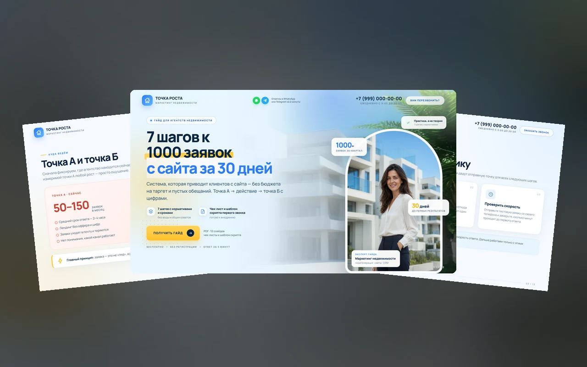
ГайдFL.ru · недвижимость · 12 слайдов
Гайд-презентация 16:9 для агентства: нормативы, сроки, чек-лист первого звонка и CTA на разбор сайта.
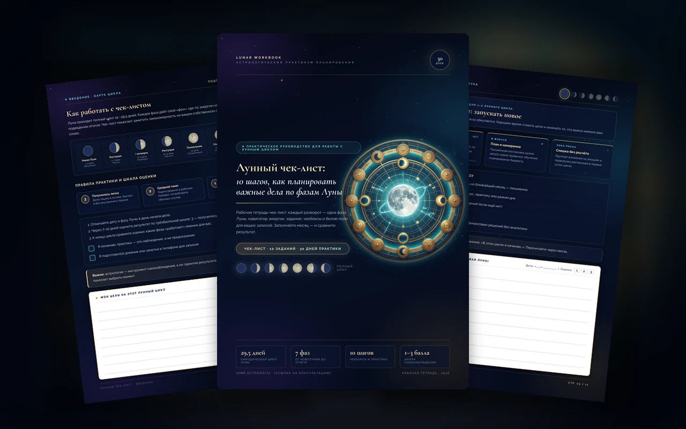
Чек-листFL.ru · астрология · 11 страниц
Рабочая тетрадь астролога: 7 фаз, задания и лист наблюдений — без обещаний, с дисклеймером.
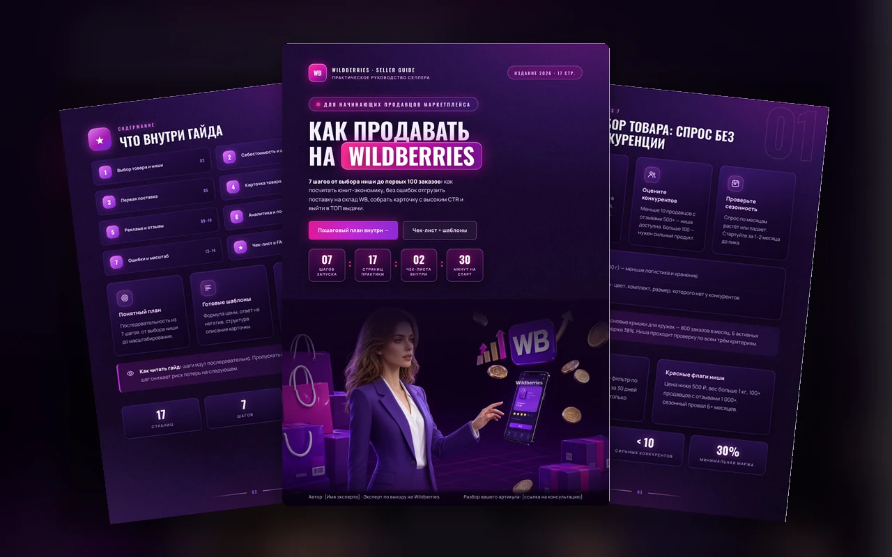
ГайдFL.ru · маркетплейсы · 17 страниц
Большой гайд для селлеров: юнит-экономика, поставка на склад, карточка с высоким CTR и чек-лист запуска.
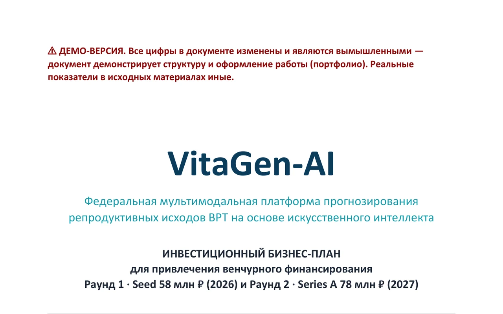
Инвестдоки Трекер
Трекер
FL.ru · бюджет 300 000 ₽
Kanban, спринты и отчёты вместо таблиц и переписок.
 PWA-трекер
PWA-трекер
FL.ru · заявки и выездные специалисты
Диспетчер, специалист, руководитель и админ в одной PWA.
 Автоматизация
Автоматизация
Прайс из Excel · 145 позиций
Смета и цена за м² за минуту вместо двух часов в Excel.
 Лендинг
Лендинг
Регистрации на бесплатный вебинар
Тёмный лендинг с таймером, формой и честной структурой.
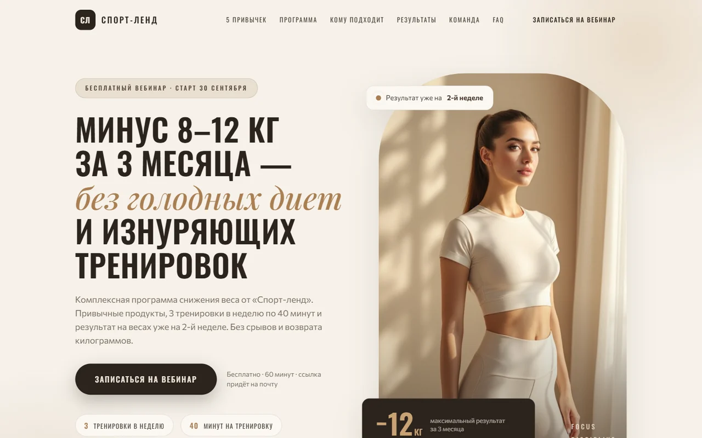
ЛендингСпорт-ленд · вебинар о привычках
Прогрев на бесплатный вебинар: боли, программа, кейсы до/после и форма записи.
 Сайт
Сайт
Премиальный сайт практики · Next.js
3D-герой, 11 секций и прайс — без формы, как просил заказчик.
VK + GigaChat · база знаний
Консультант университета 24/7: отвечает по материалам и передаёт сложное менеджеру.
Python · xlsx и docx · офлайн
Убирает персональные данные из файлов и возвращает обратно по ключу.
 Дашборд
Дашборд
Закупки MedTech · 2025–2026
Сравнение предложений и сводка по закупкам на одном экране.
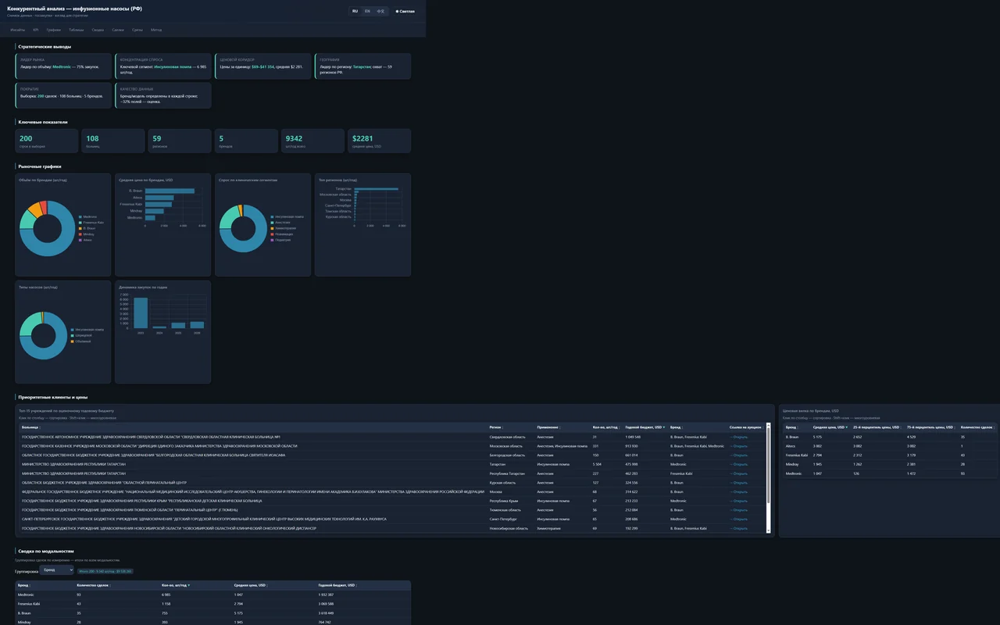
MedTech · аналитикаMedTech · закупки 2025–2026
200 закупок, 108 больниц и ценовой коридор — на одном экране.
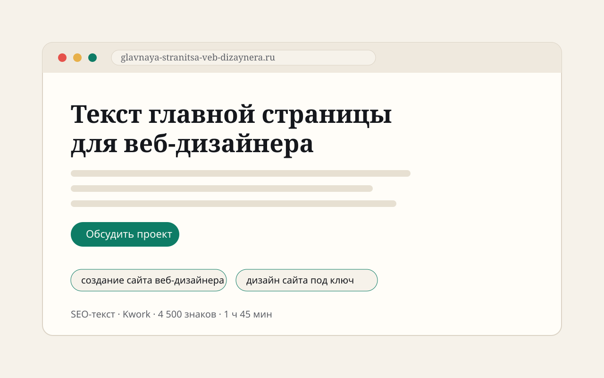
SEO-текстKwork · реальный заказ
Посадочная страница на Tilda: интент, ключи без переспама, CTA.
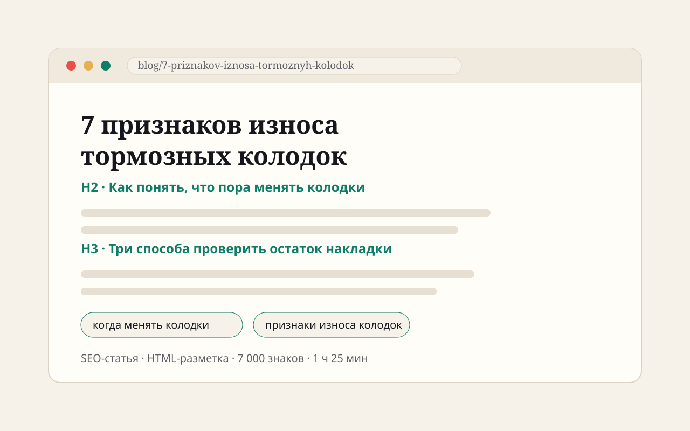
SEO-статьяKwork · реальный заказ
7 признаков износа с HTML-разметкой для 1С-Битрикс — распознаётся и ИИ, и поиск.
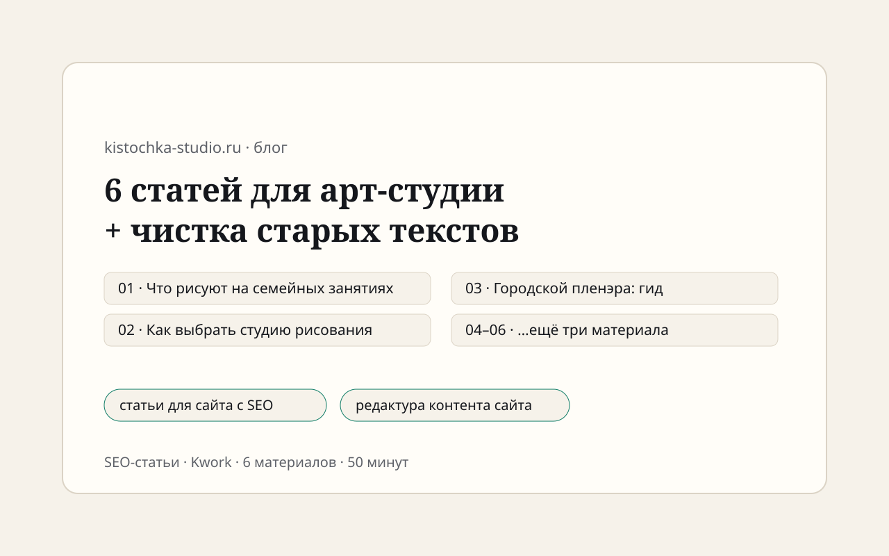
SEO-статьиKwork · реальный заказ
Контент для Tilda-сайта детской студии рисования + чистка старых текстов.
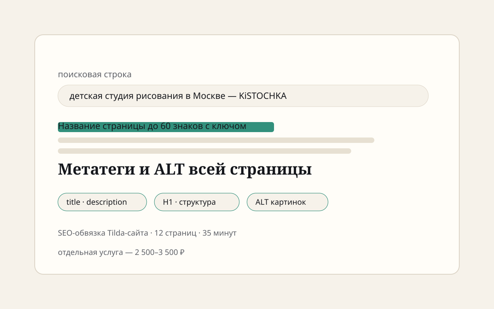
МетатегиKwork · реальный заказ
Title, description, H1 и ALT по всем страницам — SEO-обвязка сайта.
Проекты — с открытым кодом и демо, SEO-тексты — с открытыми файлами в репозитории. Полный список: github.com/Mary-RND · 31 репозиторий, 26 публичных.
Процесс
Никаких «созвонимся и по ходу разберёмся». На каждом этапе понятно, что происходит, что нужно от вас и когда будет результат.
Начать с брифа15 минут: в чём задача, что уже есть, какой результат нужен. Без презентаций и давления.
Собираю требования письменно: цель, роли, экраны, функции, критерии готовности. Вы подтверждаете.
Разбиваю на блоки, считаю часы, фиксирую цену, сроки и этапы. Без «потом доплатим».
Фиксируем объём, сроки и оплату 50/50: предоплата, остаток — после демонстрации.
Короткие спринты по 3–5 дней, в конце каждого — демо. Вы видите прогресс, а не ждёте месяц.
Первый круг правок включён в цену. Проверяем по чек-листу из ТЗ и сдаём.
Передаю код, доступы и инструкцию. По желанию — поддержка: правки, обновления, дежурство.
Пакеты
«База» — если нужен готовый проект и передача. «База+» — если хотите, чтобы проект жил и обновлялся без вашего участия.
Создаём и передаём
от 25 000 ₽
Создаём и сопровождаем
от 25 000 ₽ + от 5 000 ₽/мес.
Правило правок: первый круг включён в стоимость, второй и последующие — от 2 500 ₽/час. Дополнительные функции оцениваются отдельно и фиксируются в КП.
 MP
MP
Марина Петрушина
веб-разработчик · маркетолог-аналитик · международный бизнес
«Сначала — задача и ответственность. Потом — код».
Обо мне
20+ лет в бизнесе: маркетинг, аналитика и развитие международных проектов. Работала маркетологом-аналитиком и специалистом по развитию международного бизнеса, основатель и руководитель R&D-центра AI Predictive Medicine Lab. Веб-разработкой и автоматизацией занимаюсь потому, что мне нравится превращать рутину в работающий продукт.
Поэтому в проектах я сначала разбираюсь, как устроен процесс: где теряются заявки, кто считает смету, какие данные нельзя показывать. И только потом выбираю стек. В бизнесе это экономит больше, чем любой «современный дизайн».
Вопросы
Если ответа нет — напишите. Отвечу в течение дня и без «менеджерского» тона.
Лендинг — от 15 000 ₽, бот по базе знаний — от 15 000 ₽, трекер — от 25 000 ₽, калькулятор или автоматизация — от 25 000 ₽, дашборд и аналитика — от 50 000 ₽, SEO-текст или статья — от 1 500 ₽. Точная цена зависит от объёма: после брифа разбиваю задачу на блоки и фиксирую смету.
Лендинг — 3–5 дней, бот — 5–7 дней, трекер или сайт на Next.js — 7–14 дней. Срок фиксирую в КП и двигаю только по согласованию.
3–5 ответов о задаче, материалы (тексты, фото, прайс, примеры) и доступы, если они нужны. ТЗ и структуру соберу сам — вам не нужно писать техническое задание.
Вам — после полной оплаты. Передаю исходники, доступы и инструкцию по запуску, чтобы проект можно было поддерживать без меня.
Первый круг правок включён в стоимость. Второй и последующие — от 2 500 ₽/час. Это фиксируется до старта, чтобы не было сюрпризов.
Да. 20+ лет в медицинском бизнесе, понимаю 152-ФЗ и аккуратную работу с данными. Для анализа и передачи файлов делаю обезличивание — пример есть в портфолио.
Да. Бот может жить отдельно в Telegram или VK, а сайт добавим позже. Начнём с задачи, а не с формата продукта.
Контакты
Достаточно двух предложений: что нужно сделать и для кого. Отвечу в течение дня, задам 3–5 вопросов и предложу решение. Если задача не моя — скажу честно.